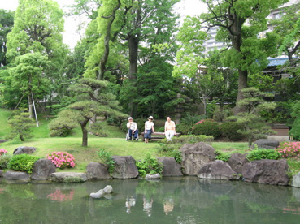

|
 |
『短歌添削』 平成21年3月25日
ある教会の短歌の添削と講評をさせて頂きました。短歌の添削とは本来不可能なもので、不必要なものでもあります。一対一で面と向かってお気持ちを聞きながら相談させていただくことができれば、添削も可能でしょうが、そういう意味で添削が不可能なところを、想像力をたくましくして推察し、何かの参考になるかと講評も書いてみました。書いてみますと、自分の勉強にはなり教えていただくことが多いことに気がつきました。ありがとうございました。短歌を勉強されている方々のために、何かの参考になれば有り難いと思い、ご了解を頂いて掲載致します。
（となりの庭）
一、沈丁花春の庭面にほころびて風にのりつつ香のただよい来
「沈丁花春の庭面にほころぶや風にのりては香のただよい来」
沈丁花のほころぶのはとなりの庭ですから、「ほころぶや」と疑問形になります。二、田の畦に並び出でたる土筆んぼ穏陽を受けて風に揺るるも
「田の畔に並び出でたる土筆んぼ穏陽の中の風に揺れつつ」
「穏陽を受けて」「揺るるも」といいますと、感動しているわけだから、穏陽と風の間に因果関係があるように聞こえますが、実際には風が吹いて、穏陽が風をもってきたわけではないのですから、できるだけ静かに描写して表現したほうがいいと思います。三、柔らかな丸き線持つ夫の頭 髪刈り終えぬいとていねいに
「柔らけき丸き線持つ夫の頭いとていねいに髪刈り終えぬ」
「いとていねいに髪刈り終えぬ」と逆転させたのは、「ていねいに」で止めるよりは「終えぬ」と終止形で止めたほうがよいからです。よくまとまります。（ジャマイカの人）
四、外つ国の友に着物を着せたれば色黒美人のスタイル抜群
「外つ国の友に着物を着せたれば色黒美人はスタイルのよし」
「抜群」というと、言いっぱなしのようになりますので、「スタイルのよし」とします。五、亡き母の墓に詣でて十三回忌の法事の日取り告げもうしたる
このままでよいと思います。なんでもないことのようですが、十三年という年月の長さを思えば、亡くなられたお母様に対する思いは尽きないものがあったと思います。このとおりでよいと思います。
（小学校の同窓会にて）
六、名札見て確認し合う同窓会思い出話つきる事なし
このお歌もこのままでよいです。小学校の同窓会の場合は、五十年ぶりくらいになっている場合が多いので、名札と顔は確認しあわなければ納得できない場合も多いと思います。名前と顔が一致すれば、それだけで思い出はつきることなく出てくるはずです。七、父からの「春の便り」と菜の花の広がる畑の写メール届く
このお歌はこのままでよいお歌です。写メールなどが通じ合う時代になって、短歌もそれなりにしゃれた短歌になるものですね。八、目の丸き陶の狸が庭に居て我が行動を見守るごとし
陶木の狸は、おそらく上手にできているのでしょう。おもしろいお歌だと思います。九、ぐーどすえすすめる金つば焼きたては京極たらたら坂を下りて
結句は「下りぬ」とします。結句が「下りて」となっていますと、中途半端です。
坂を下りて買いぬ、ということだと思いますが、字余りでそうは言えませんので、「下りぬ」としておきます。それとも「たらたら坂」を詞書きにして、「京極坂を下りて買いぬ」とされてもよいと思います。ご検討ください。一○、庭先の椿の花のめじろらの動きを夫と息ひそめ見る
「庭先の椿の花のめじろらの動きは夫と息ひそめ見つ」
適度の緊張感が漂い、ご夫婦のあうんの呼吸が歌われているよいお歌です。（夫・牡蠣をいただくことありて）
一一、揚げたての牡蠣のフライを食べながら美味い美味いとビール飲みおり
結句は「ビールを飲むも」としたいと思います。「ビール飲みおり」でもいいのですが、そうしますと「飲む」という行為と「おり」という状態の二つの感動を一首に歌ったことになり、二感動ということになります。夫が牡蠣をいただいてうれしくビールを飲む行為は、作者からみていて、決して二つのことではなく、感動を持続している時間が長いと考えて「飲みおり」でもよいと思います。ただしそこまでこだわっていなくて、短歌の感動は、神と人とのふれあう一瞬の感動を歌うべきものとするならば、「飲むも」となります。ただし「飲むも」とすると、自分が飲んでいるような感動になって傷になります。やはり原作のままでいいとするべきでしょう。一二、朝ドラの「だんだん」の言葉なつかしき幼き頃はわれもつかいぬ
朝ドラで、康太が「だんだん」と言って、あわてて「おおきに」と言い直すシーンがありました。方言は生きた地の言葉ですから、幼きころ使った言葉は生涯身に付いているものとして、おおいに納得させられるお歌です。このままでいいと思います。一三、寒風に吹きさらさるる桜枝にあまたつぼみのふくらみており
結句は「ふくらみ初めぬ」とします。「ふくらみており」としますと、「ふくらむ」ことと「おる」ということが、あたかも二感動に見えてきます。神と人とのふれあいの一瞬はどこにあるかとたずねてみますと、「ふくらみ初めぬ」ではないかと思います。一四、里山の奥を登ればルリビタキのさえずる鳴き音谷渡りゆく
このお歌も同じ意味合いで、「谷を渡れる」ではないかと思うのですが、作者は「谷を渡ってゆく」という感動があって、そこまでが初一感と決定されたのだろうと思われます。このままでよいと思います。一五、冬山の景色日ごとに変わりゆくを入院ベットの上ゆ眺むる
結句は「入院ベットの上に眺むも」とします。「ゆ」を「に」となおしたのは、東京から大阪までというときに使う「から」と同じ意味合いの「ゆ」よりは、場所に限定した意味のある「に」のほうが、作者の気持ちに添うていると思ったからです。最後の「も」は感動の「も」です。（草月展）
一六、華展にて芸術の世界に引き込まれよき色彩に心高まる
結句は「心高めつ」とします。「高まる」よりは、きりっと引き締まって力強くなります。「華展にて」を詞書きにすると「芸術の華の世界に引き込まれよき色彩に心高まる」となります。「華展にて」が初句にありますと固いイメージになりますので「高めつ」のほうがいいのです。どちらがよいかご検討ください。一七、如月のひかりとぼしき朝庭に水仙の花むれて咲きたり
結句は「咲きたる」とします。「水仙の花ひとつ」なら「咲きたり」ですが、「むれて」とくれば「咲きたる」だと思います。一八、信友と汗をかきかき鍋つつくとてつも辛いタンタン鍋を
「信友と汗をかきつつ鍋つつくとてつもなく辛いタンタン鍋を」
「とてつも」という言葉はありませんので、「とてつもなく」とします。一九、照り陰りするやわら日を背に浴びつ言繁き姑と墓所の草ひく
「浴びつ」は「浴びて」とします。「て」の方が間(ま)が長いですので。作者は気持ちよくのんびりと日を浴びて草取りをしたいのに、姑はこのときとばかり教育に専念して言繁くなっていらっしゃるのですね。（厚手ビニール袋に入れて）
二〇、金柑のジャム作りしと妹より定型外の郵便届く
「定形外」という言葉を外します。「かくは大きい郵便届く」とします。「定形外」では大きいか小さいか分かりませんが、たぶん大きいのだと思います。ここは思いっきり大きくしたほうが嬉しさが出ます。「かくは」は「このように」という意味です。二一、お彼岸の近づく今日は祖の墓の掃除済ませて心安らぐ
「お彼岸の近づく今日はご先祖の墓の掃除を済ませ安らぐ」
「心安らぐ」といいますが、安らぐのは心なので取っていいと思います。「祖の墓」という言葉は、ていねいに「ご先祖の墓」と言ったほうがいいです。二二、日だまりの春の大地に親子連れ雑草かきわけつくしとりたり
結句は「つくしとりたる」とします。語感から言って、重く治まるからです。結句はずしんと重くというのが歌の心得です。二三、生命かけ宇宙まで飛ぶ丈夫の後姿に拍手送らむ
このお歌はこのままでよいお歌だと思います。私は頂きます。（京都府美山の里）
二四、山間の傾りし段に茅葦の家軒ごとの日溜り穏に
結句は「穏し」と終止形にします。「傾りし段に」は「傾りの段の」として、「の」のリズムを生かします。
「山間の傾りの段の茅葦の家軒ごとの日溜り穏し」二五、春浅き川土手なべて黄の色に染めて菜の花咲き初めにけり
このお歌はこのままでよいと思います。（総合公園）
二六、薄紅色杏子の花の咲く道を甘き香りに誘われ登る
初句は「薄紅色の」と「の」を入れます。二七、ここだくの苞をぬぎたる白木蓮の白き蕾はみどりを含む
このお歌もこのままでよいと思います。二八、小豆ほどの小さき蕾の沈丁花甘き香りがしるく漂う
「甘き香りのしるく漂う」とします。（食材を買いに）
二九、夫の顔思い浮かべてあれこれと迷い求めぬグリーンピースを
「夫の顔思い浮かべてあれこれとグリンピースは迷い求めつ」
結句は終止形でとめたほうがいいです。三〇、わが庭は色さまざまな花ざかりあけびの白は舞子のかんざし
この歌は動詞がなくて、イメージを述べただけですが、あけびの白を舞子のかんざしと感じた感受性に、ご自宅の庭を愛しておられるお気持ちが匂うようにでています。このままでよいと思います。（幼稚園児の流し雛）
三一、手作りの雛人形を幼児が願いを込めてそっと流しぬ
「幼児が」は「幼児は」とします。流し雛の風習はどちらかというと、幼児よりは母親の行為ですが、手作りの雛人形に幼児はどんな願いを込めたのでしょうか。そっと聞いてみたい気がいたします。（左足骨折のあと）
三二、久し振り散歩のできる嬉しさにいつもの道を行き戻りする
このままでよいと思います。嬉しさがよく表現されていると思います。三三、菜の花の甘き香りを吸いながら広き田んぼをただ一人行く
「吸いながら」を「吸いにつつ」とします。吸いながらと言いますと、「ながら」だけが浮き出ますので。三四、鉢植えの色つやの良きシクラメン花びら反らす冬陽をうけて
「鉢植えの色つやの良きシクラメン冬陽をうけて花びら反らす」
逆転したのは、神業の進行する順番に添って歌うほうがよいからです。（お見舞い）
三五、病床の背に付き添わす女の君とともに卒寿をこえ給いたる
このお歌はこのままでよいと思います。三六、品を備え格調高き短歌求め遥かなれどもわれは進まむ
「品を備え格調高き短歌求め我は進めど道遙(はろ)かなる」
進んでみなければ道は遙かかどうかわからないではないかと、いうことで逆転してみました。
このほうが自然だと思いますが、いかがでしょうか。（ブラジル）
三八、こぼれ種あちこち芽生えし朝顔の花数えるが楽しみとなる
このままでよいと思います。朝顔の花は平安時代に中国から日本にきたものだと思われますが、日本の花としてブラジルにいらっしゃれば、ことさらに咲くのを楽しみとしておられるのでしょう。そういう歓びがよく分かります。三九、音もなく細雨降りつぎ臘梅の黄の花ぬれて艶めき香る
「音もなく雨は降りつぎ蝋梅の黄の花ぬれて艶めき香る」
「細雨」は読み方がありませんので、ただの「雨」とします。蝋梅に降る雨は春雨と決まっていますから、雨でわかるでしょう。（テレビドラマ「さくら道」を見て）
四〇、命かけて植え続けたる桜道の心をつなぐ妻子も友らも
「つなげ」と命令形にしたほうが、感動がでるように思いますが、いかがでしょうか。四一、道沿いを遠く続ける菜の花の目にも眩しき春となりたり
「目にも」は「目には」とします。「春となりたり」は「春となりたる」とします。その方が重くおさまると思います。四二、夕暮るる天空指して木蓮の白妙の花咲き極まれり
「夕暮るる天空指して白妙の木蓮の花咲き極まれり」
「白妙の」は枕詞ですので、前にもってきます。「白妙の」という枕詞はもともと意味があるようで無い言葉ですが、上手に入れられて調子を整え、木蓮の花の白い美しさを歌い上げていらっしゃいます。よいお歌です。
ある教え子から、短歌のランク付けについて説明してほしい、という要求がありましたのでやってみます。短芸に承認されたものではありません。私の独り言です。
短芸のランク付けは、どういう理由があってランクがあり、昇欄するか誰も論じたことはありません。おそらく「秘すべし、秘すべし」という内容なのです。
「新」欄・生まれて初めて短歌を使ったときにはここになります。あえて五七五七七である必要はありません。
初めて投稿した次の号から選集Cになります。少なくとも、五七五七七と、字数が整って居なければなりません。が感動の有無は問いません。
選集B、感動らしきものがあるのがポイントです。選集Cを一年続けると、だいたいBになります。
選集A、短歌にすべき素材か、物語にすべき素材か、区別が必要です。私の岳父、妹尾巌先生の歌に、こういうのがあります。「おしえおや様のお宅のご飯おいしくて食べても食べても食べ足りなくも」
次の「月集」は、感動によがる境地が必要です。何首も連作しますと、それが成功したとき
月集になります。
次は「人集」です。人集は、一応のめやすとなります。短歌をしていると言えるところです。
短歌は単純化であることがわかれば、ここです。岳父、妹尾先生の例でいうと、結び体時代、二代様が、体員の指導を厳しくなさいました。
ある日、花魁の日本画を一枚出して、この絵をじっと見つめて、絵の中に入っていくことを指導なさいました。その時、妹尾先生が、「おしえおや様、入り方はわかりましたが、出方はどうするかわかりません」と質問しました。二代様は「ハハハ」と笑われて、「心配しなくてもいい」と言われました。その時、花魁の絵を見て、それぞれの感じたことを言葉に直して表現いたしましたところ、妹尾先生は「しゅなゆら」と言いました。みな、呆然として「しゅなゆら」って何だろうと思いました。
この対象の中に入って、出てくる境地をマスターしたところが人集です。「作品三」は、囲碁で言えば初段、ゴルフで言えば、シングル、と言ったところです。
感動を感動としてとらえ、単純化して形を整えなければいけません。「作品二」、作品三の境地がさらに精選され、一応間違いなく表現できるようになれば、作品二です。人間が努力して昇欄できるのは、ここまでです。
さらに「作品一」に進むには、神様が、「作品一」にしようと思わなければなりません。
歌に格調というものができます。例えば、「田子の浦ゆうち出でてみればま白にぞ富士の高嶺に雪は降りける」
山部赤人のこの歌などは、立派な作品一の歌です。
まるで、富士山の姿が、赤人の感動そのもののような姿をしています。
私が作品一になった時の歌は暴かれし嘘なお通すつもりらし聡(さとし)の面のあなたくましや
という歌で、私は作品一になりました。作品二から作品一へは、まかり間違えば死ぬような思いをしなければなりません。
「命かけて乾坤一擲の勝負すると神に向かいし人恐ろしえ」
という二代様の、初代様を歌った歌が思い出されます。
私の歌で言えば、教育の現場で、嘘は言うべきものだ、上手に付けば決してばれないと信念している子どもに向かって、嘘を暴いていって、暴かれた刹那に「嘘をつくことの美しさ」を発見し、神様に感謝し、客観することができた瞬間をとらえて、ちょうどに表現した、と言えます。人生は芸術である、という境地は、この境地です。短歌のみおしえでいうと、
「うたについては自分は何も知らぬとおもうて一たん白紙となりこの心得をひたすら相守ります」ということになります。
子ども達が、各々に自分の心の底からわき上がる意欲を持ってほしいと願うのは、誰しものことですが、その意欲が、他人を追い越して良い成績をとるとか、自分以外の人に何かをさせることによって自分の都合をよくしたいといった種類のことではなく、誰かに何を命ずるのでもない、自分を分かってほしいというのでもない、ただ自分の心に湧いた自分独自の思いを、形あるものにしたい、うたいたいという子どもであってほしいと、私は常々思っていました。
本校は、人生は芸術である、という教義にのっとった学校教育をめざしているわけですから、教育も又、芸術する事のできる人間を造ることをめざしています。
芸術は、どのような種類のものであっても、その表現においては、技術の習得が必要ですが、だからといって、技術さえあれば芸術が成るわけではありません。何を、いかに表現するかという、いわば、うたいたいものが明確にとらえられていることが必須の条件です。
ところで、子ども達は、知育のみに片寄りすぎたところでは、決して感動する心を育てることはできないもののようです。教師が子どもの意志を育てようとせず、教師の恣意を押しつける限り、うたいたいものをもった子は育たないと、私には思われます。知識のみを押しつけてはならない、知識に偏した教育からは、決して感動しないが、権勢欲と知的憂愁だけは備えた妙な子どもが育ってしまいます。うたいたいものを豊かに持った子、そういう子を育てるには、幼少時代にその種をまき、育てなければならないものがあります。中高校生になってからでは、すでに、とりかえしのつかぬことになる種類のことがあるにちがいありません。しかも、このような思いは、小学校教育に携わる人々の等しくもっている思いでもある筈です。
五年生の子ども達に、短歌の指導をとおして、うたいたいものの存在に気付かせたいという思いは、前からあったのですが、或る日、こころみに一首の短歌を暗唱させたところ、何回くりかえしても、言えない子がいるのを発見しました。わたしは、「良い短歌を、そのまま暗唱するということは、何か言葉では説明できないものを子ども達に植え付けることになる。」という確信を持ち、毎日一首、子ども達全員が暗唱することを続けることになったのです。
教室の小黒板に、毎日一首短歌が書いてあり、それを覚えた子が、遊び時間に、私の前で暗唱してみせるのです。すらすらと一度もとぎれずに言えたときのみ合格です。毎日遊びに夢中になって、帰る時刻が遅くなる子もいましたが、なにせ、一首ですから、その気になれば無理のないことでした。そして、とうとう、全員が百首暗唱する日がきてしまったのです。百首に達する頃は、二、三首一度に覚える力はありますから、私の前で暗唱する事は、子ども達の楽しみになっていました。歌の意味には触れず、ただ歌の姿に親しむことをのみ目的としたのですが、聞かれたら意味を解説することも勿論あり、万葉集からの短歌でも、大人よりは子どもの方が苦もなく吸収してしまいます。
百首暗唱を終わったところで、自分たちも作ってみることにしました。一緒に校庭に出て、草花を見ることから始めます。今から十分間、口を閉じて、じっと花を見つめる、何も思わず、理科の観察ではないのだから、花になったつもりでただじっと見る、一分間でも見ればあきてしまうけれど、それでもただじっと見つめつづける、という指導をしたのです。そうして見つづけていれば、花は、今まで見たこともなかったような、言葉にならぬ美しさを見せてくれるものです。そうしたら、その時のあやしい気分をそのまま心に湛えながら、その花のようすを見たとおり、そのまま吐き出すように言ってみる。そして、できれば、五七五七七のリズムにのせてみる。そんな風な簡単な指導でしたが、リズム感は、すでに百首暗唱の間に、子どもたちの心に親しいものとなっているので、決してむずかしいものではなく、１時間の作歌指導で、全員が短歌らしいものをつくりあげることができたのです。
初回の成功に気をよくして、一週に一度ずつ、友人の作った良い短歌の鑑賞の時間をもちました。仲間の作品を吸収することが自分の作歌力をつける近道であることも教えましたが、作品の良さを発見しようとする心の姿勢は、日頃あまりなじみのない世界でもあり、ものさしで事の善悪を判断することにのみなれた子どもたちには、楽しい世界をかいま見ることにもなったようです。
紙数がつきますので、左に、三学期に入って間もない或る雪の日の作品を紹介します。これは五年一組全員の作品です。
読者の迷惑もかえりみず、だらだらと子どもの作品をならべたのは、ともかく、クラス全員の中には、テストでは十点くらいしかとれない子もいるわけで、その子はその子なりのたどたどしい作品ながら、全員そろって作品をつくりあげたところを示したかったからです。
さて、うたいたいものの存在に気づいた子どもたちは、自ら、けんかなどはしなくなり、短歌を作る時の気持ちで、友だちの心の中を察することもできることに気づきます。なによりも、同じ雪の日の情景を見て作った筈の作品が、四十三名全部ちがうということは、日頃のテストの解答が、他と同じであることを要求されていることになれきった感覚を、ゆすぶり、これは一種別な世界であることに気づいたようです。他人をまねる必要のない、自分だけのものをつくりあげる楽しさ、それは他からうばわれるおそれの全くない充足した世界であり、人間らしい表現の世界であると私には思われました。
人生とは何か、それは、自分のうたいたいもの(真実)を造形する場であるという内容が、わずかでも実感できれば、勉強もまた世のため人のため自分のためにするのであるという学習の意義も教えることができることもうれしいことでした。
短歌という特殊な形式は、一般的ではありませんが、それだけに一字一句をゆるがせにすることのできない妥協のなさを、身をもって知り、こころをこめるということの手応えをひとりひとりがたしかめ味わった筈です。「言う」ということは、相手に自分の思うとおりにさせることではない。自分の思いを、胸をひらいて相手に見せる、まさに、うたうことであるということ、更に、「聞く」ということは、相手の言うとおりにさせられることではなく、相手の気持ちを、相手の身になって聞くにすぎないということも、短歌の指導をとおして互いに学んだことの一つです。このような人間表現の基本こそは、小学校時代に、先生と生徒が一体となってつちかっておくべきことだと思われてなりません。
（五年生を担任していた頃の体験を文章に綴ったものです）